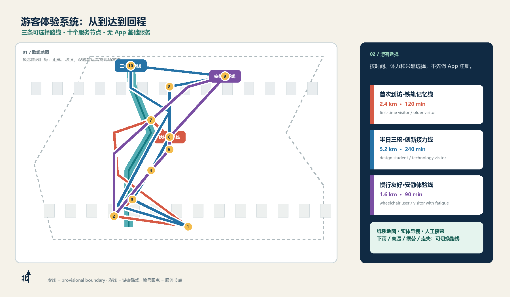

铁路记忆先行
先看京张铁路时间轴、材料与遗产线索，再进入 AI 场景。
把游客当作第一用户：从到达、选择、行走、休息、测试到回程，城市设计被组织成一条可执行、可暂停、可反馈的旅程。
正式边界、道路、坡度和设施条件尚待确认；路线与面积均为 provisional 设计讨论。

三条路线：首次到访 2.4 km / 120 min；半日三核 5.2 km / 240 min；慢行友好 1.6 km / 90 min。
先看京张铁路时间轴、材料与遗产线索，再进入 AI 场景。
连接轨道、社区、园区和清河界面，活动日与普通日都能使用。
发布、咨询、成果展示与休息共处，演示标注真实、测试或待确认。
展示礼让、互操作、离线降级和人工接管，异常时先停止再解释。
到达厅 → 记忆庭 → 遗址公园活力段 → AI 原点开放院落 → 北端回程
2.4 km / 120 min · 每 300–400 m 有座椅、饮水和导视 · 无手机也可完成
到达厅 → AI 原点 → 众智园测试港 → 大钟寺路演客厅 → 轨道返程
5.2 km / 240 min · 每个核节点可跳过、折返或由服务台换线
到达厅 → 雨水花园 → 安静庭院 → 家庭服务点 → 到达厅
1.6 km / 90 min · 低坡度、连续休息位、无障碍卫生间、安静时段
纸图、饮水、卫生间、人工台。
大字路线板、颜色、图标和语言选择。
触摸材料、阴凉座椅、儿童高度信息牌。
连续慢行、低眩光照明和树荫支线。
看见蓝绿系统；暴雨时切换安全路线。
开源发布厅、成果墙、服务台和共享桌。
红色接管按钮，任何人都可以暂停。
礼让、互操作、离线模式、停止线和结果板。
母婴位、儿童边界、安静座椅和无障碍厕位。
轨道方向、人工提示、纸质替代路线。
推荐 1.6 km 安静线，优先树荫、室内节点和最近座椅。
雨水花园与测试港转为只看不进，使用有顶廊道。
纸图、实体色带、人工服务保持完整，AI 只是增强层。
回到接管站，按实体按钮或路线编号处理，不公开个人信息。
临时边界面积，待正式 polygon 复算
由绿地结构化图层复算
由公共空间结构化图层复算
路线、入口、回程和十个节点。
统筹研究、总体设计、重点区域。
原点、众智园、大钟寺。
与 provisional 边界联动。
保留、改造、更新、新建。
三条路线与无障碍支线。
遗址公园、雨水花园、休息点。
前厅、院落、测试港、回程点。
发布、接管、离线、停止。
便利、无障碍、天气和风险。
deterministic / spatial / visual / professional review。
sources.json、processed data、site package。
路线和面积是 provisional 讨论。
结构化游客旅程：visual/assets/visitor_journey.json；路线数据：visual/assets/visitor_routes.json（GeoJSON 内容）。所有游客路线、服务半径、坡度和运营指标需在官方资料到位后复核；不替代规划审批、红线、消防或运营承诺。